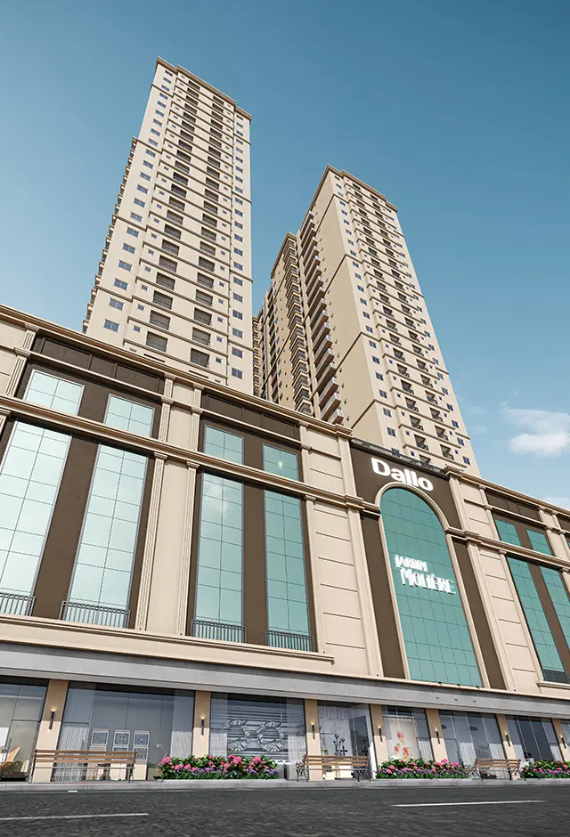
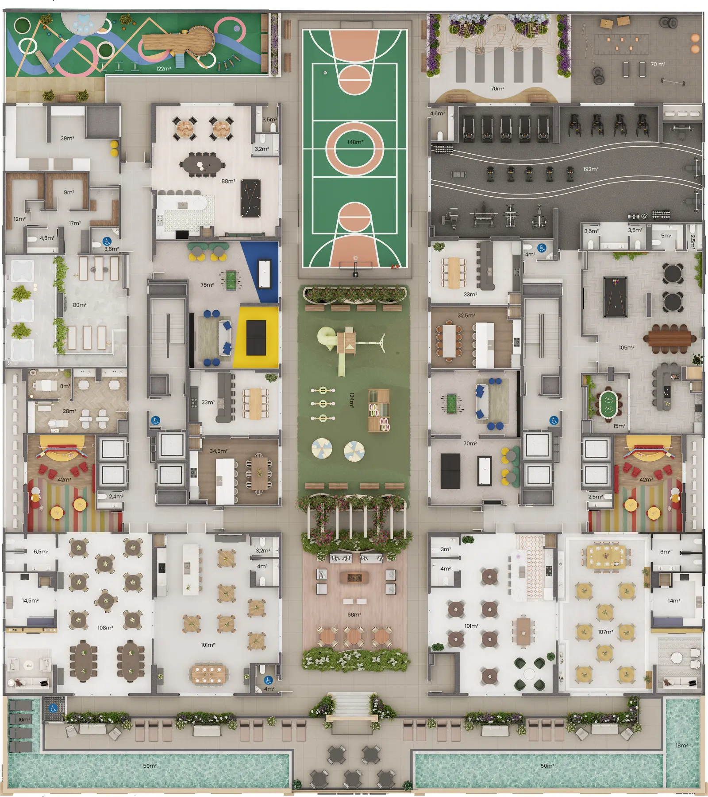

Jardim Molière
- Suites
- 2 suites
- Superficie
- 80m²
- Cocheras
- 2 vacantes
- Pisos
- 30
Inspirado en el encanto de los teatros clásicos franceses, Dallo Jardim Molière consta de dos torres de 30 pisos, ocho planos de planta diferentes y más de 3000 metros cuadrados de espacio de ocio. Un proyecto que abarca más de 58 000 metros cuadrados de puro encanto en una ubicación privilegiada en una de las playas más codiciadas de la costa catarinense.
Inspirado en el encanto de los teatros clásicos franceses, Dallo Jardim Molière consta de dos torres de 30 pisos, ocho planos de planta diferentes y más de 3000 metros cuadrados de espacio de ocio. Un proyecto que abarca más de 58 000 metros cuadrados de puro encanto en una ubicación privilegiada en una de las playas más codiciadas de la costa catarinense.
3.040m² de espacio de ocio: exclusivo para cada momento.
Las instalaciones de ocio del Jardim Molière combinan comodidad y practicidad en cada detalle, con espacios exclusivos como piscinas, spas, cuatro salas de fiestas, pistas deportivas, gimnasios y mucho más en sus 3.040m².
Los apartamentos
Cada planta del Jardín Molière fue diseñada para ofrecer un ambiente armonioso y sofisticado, perfecto para diversos estilos de vida.
Ubicación que marca la diferencia.
A sólo 600 metros del mar, en Porto Belo, Jardim Molière se encuentra en una de las zonas más prometedoras del litoral catarinense, donde se unen naturaleza e infraestructura completa.

Plantas

Tipo 1 - 83 m² de área privada y 138 m² de área total; Tipo 2 - 82 m² de área privada y 136 m² de área total; Tipo 3 - 81 m² de área privada y 134 m² de área total; Tipo 4 - 82 m² de área privada y 137 m² de área total; Tipo 5 - 82 m² de área privada y 137 m² de área total; Tipo 6 - 80 m² de área privada y 134 m² de área total; Tipo 7 - 80 m² de área privada y 133 m² de área total; Tipo 8 - 82 m² de área privada y 137 m² de área total; 2 suites • 2 plazas de aparcamiento

4 Salones de fiesta con acceso a la terraza 1 2 Salas de juegos infantiles 2 Salas de juegos 4 Áreas gourmet con acceso a la terraza 2 Fitness Center con acceso a la terraza 3 Sala de cuidado personal y masajes Spa Ante sauna Sauna seco Sauna de vapor Cuidado de mascotas 2 Piscinas para adultos Piscina infantil Salones de piscina Chimenea Zona de juegos Cancha deportiva Zona de crossfit Zona de yoga Parque de mascotas
La obra
Inicio de la construcción: octubre de 2024 • Finalización: diciembre de 2031
Registro de Incorporación: R-11/M-44.101.